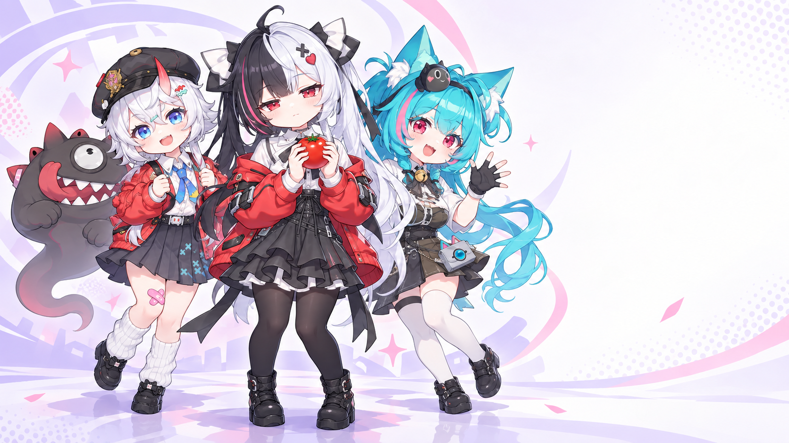
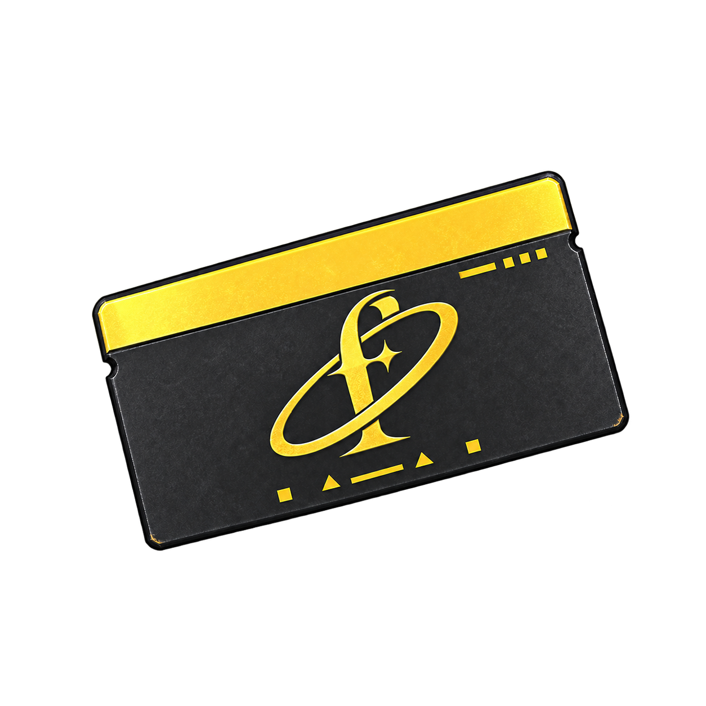
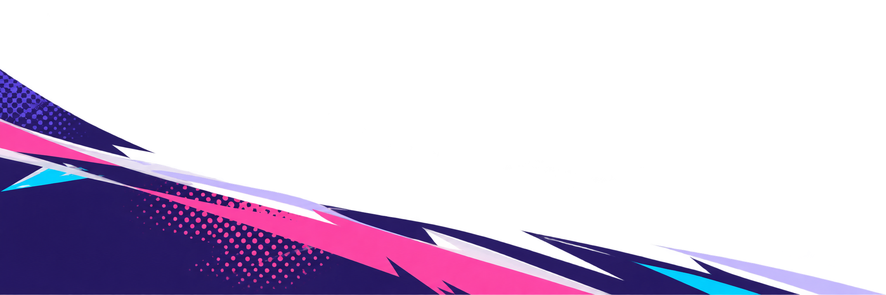
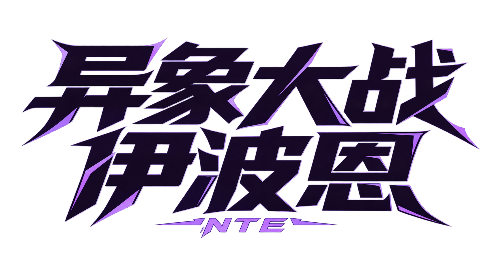

异环非官方同人游戏
沿着街道，开始今天的冒险
EIBON / TEAM
没有符合筛选条件的同事。
点击角色加入或移出编队 · 水母独立供应，不占出战位
TAKE A LITTLE BREAK
店铺的时间，暂时停在这里。
EIBON / ARCHIVE
01 · 编队与三叠五路十一列，通常每局最多十位常驻同事。浔上场立即暂停本路2秒，二、三叠延至3、5秒。同路可放多位浔，低伤近战各自生效；就绪的最高叠数浔施放一次时停，同路共享24秒间隔，升级和撤回重放不能重置。将角色拖到街道上部署；在同一格重复部署相同角色升至二叠、三叠，按正常费用支付并保留原生命比例。三叠增强能力与专属联动，有已核实原作时装的角色会切换外观；安魂曲切换紫色哥特形态。真红放在薄荷前方，接到旋风后消除原攻击，转为增幅火焰；三叠才解锁红温和龙爪近战。翳是地刺，可与普通角色共格。主线赢关招募，旧进度继续有效。
02 · 首领带来的街道首领入场后改变街道气氛与规则：余烬灼地、异象侵蚀、锁页封技、节拍落点、蝶影遮蔽等各有应对。鲸鱼带来海面，陆地异象不会潜水；潜水部属会循环下潜与浮出。海月可直接部署，一叠就有本路穿透和落点范围伤害，对潜水敌人造成3倍伤害且无潜水减伤。淹没不再使角色立即退场，海啸重复命中水面格会造成推浪伤害。
03 · 状态与补给沉睡、惑音、封技、禁疗与灼烧会显示倒计时。埃德嘉或消解装置可净化并提供短暂抗性，伊洛伊治疗受禁疗限制。猫猫是道具，使普通或精英敌人反攻八秒，全局最多两次。局内方斯可购买医疗、消解与照明补给；商店库存道具会在使用后扣除。结算将剩余且确实赚得的局内方斯按二十倍存入商店。
04 · 首领、无尽与随机传送首领固定预警落点，普通攻击与技能连段之间留有应对时间；弱势命中会制造硬直与增伤破绽。精英生命更高，早雾能吞噬可吞目标。无尽每三波出现首领：先完成十一场单首领，再进入双首领与三首领阶段；首领战前可更换两张编队卡，场上角色与等级保留，时间、收入和环境伤害暂停。随机传送使用已招募角色池，六格牌库随机给卡，角色免费部署，方斯用于补给；战备时可更换两张传送卡。机制与升级数值均为本同人塔防改编。
1–0 选人 · J 猫猫道具 · 方向键选格 · Enter 放置 · R 铲子 · C 收方斯 · 空格暂停 · Esc 返回
EIBON / PREFERENCES
偏好保存在本浏览器。